| 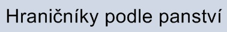 |
Hranièní kameny na lichtenštejnských panstvích
Panství Pozoøice
ICFVL = Iohann Carl Fürst von Liechtenstein (Jan Nepomuk Karel kníže z Lichtenštejna).
FL = Fürst Liechtenstein.
FIFvL = Franz Iosef Fürst von Liechtenstein (František Josef I. kníže z Lichtenštejna).
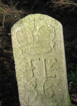

 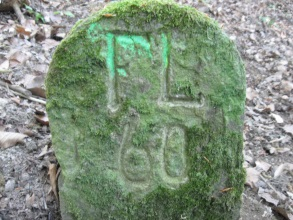
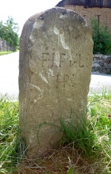
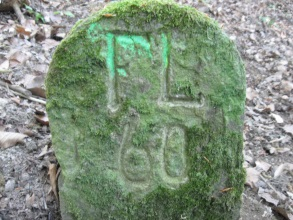
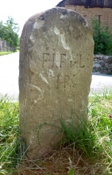
Autoøi fotografií: Jan Nejezchleb (4x) a Matouš Jirák (1x).
Na první fotografii je zachycen kámen s nápisem F.L. (Fürst Liechtenstein), knížecí korunkou a letopoètem 1727.
Další tøi snímky ukazují hranièníky s iniciálami IAFVL a letopoètem 1703. Význam iniciál: IAFVL = Iohann Adam Fürst Von Liechtenstein (Jan Adam Ondøej z Lichtenštejna).
Na páté fotografii je zachycen hranièní kámen z roku 1754 s korunkou, iniciálami IWFVL a písmeny HP (Herrschaft Pozoøitz). IWFVL = Iosef Wenzel Fürst Von Liechtenstein.

 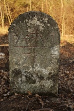
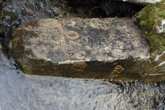
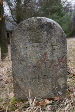
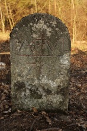
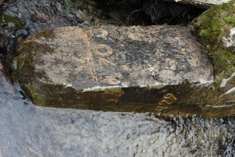
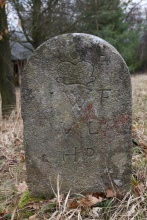
Autor fotografií: Martin Jirák
Hranièní kameny z roku 1754 s korunkou, iniciálami IWFVL a písmeny HP (Herrschaft Pozoøitz). IWFVL = Iosef Wenzel Fürst Von Liechtenstein.
Vpravo kámen s nápisem ICFVL HP z roku 1748 - patrnì hranièník Jana Nepomuka Karla z Lichtenštejna.
 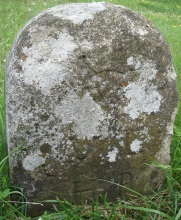
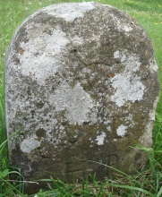

Autoøi fotografií: Matouš Jirák a Petr Vomáèka (vpravo).
Novìjší hranièní kameny s písmeny FL (Fürst Liechtenstein).
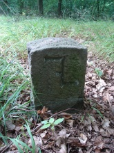


Autor fotografií: Matouš Jirák
{kind=link}
{kind=link}
{kind=link}
{kind=link}
{kind=link}
{kind=link}
{kind=link}
{kind=link}